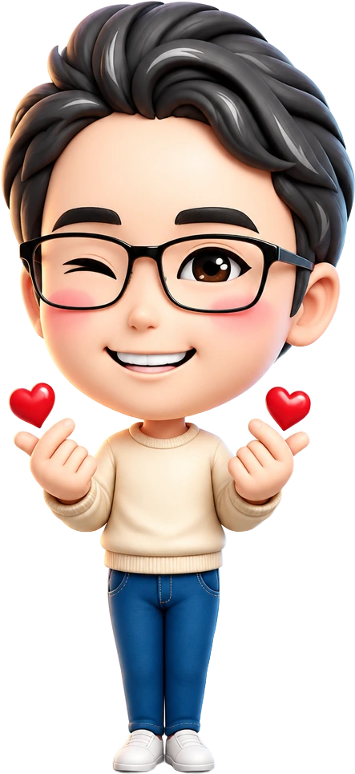

한국교총
복지·연수 분과
2026 · 11 · 20
분과 보고
핵심만 · 5분
복지·연수
분과 회의 결과
보고 · 질의 · 열띤 토론
핵심만 말씀드립니다

01
복지
02
연수
NEW
새로운 길
복지‧연수 분과 회의 결과를 말씀드립니다.
보고 요약 1 / 3 · 회원복지
제휴는 넓게,
대표 복지는 뾰족하게
제휴 확대
호텔 · 장례
대표 복지
바로 떠오르는 혜택
2030 집중
젊은 회원이 체감하게
종합교육연수원장과 회원복지국장의 보고와 위원님들의 질의, 그리고 열띤 토론으로 가득 채웠던 시간이었습니다.
보고 요약 2 / 3 · 연구대회
연구대회,
선택과 집중
140
편
현장교육연구대회 본선
미래교육(AI) 분과
신설 · 내년 적용
(보고 요약) 연구대회는 현장교육연구대회에 힘을 모으고, 미래교육(AI) 분과를 새로 만듭니다.
보고 요약 3 / 3 · 종합교육연수원
숫자로 본
연수
217
과정
사제동행 연수
18
신규
2026년 새 과정
30
차시 무료
한국교총 AI 아카데미
여러 말씀들이 있으셨지만 핵심적인 부분만 말씀드리겠습니다.
01
먼저, 복지 · 당부
삶의 질을 올리는
고부가가치 복지
재점검
재편
집중 추진
먼저 복지 부분에 대해서는, 기존의 복지사업을 재점검하여 회원들의 실생활에서 삶의 질 향상을 위한 고부가가치 복지가 제공될 수 있도록 사업을 재편, 집중 추진해 나갈 것을 당부하였습니다.
복지 · 주문
때에 맞는
시기별 복지
1 · 2월
이사비 할인
방학
헬스 · 필라테스
시기별 복지제도, 예를 들어 1·2월엔 이사비 할인, 방학 땐 헬스·필라테스 등 복지 혜택 기획을 주문했습니다.
복지 · 제안
그리고,
세 가지 제안
웰컴키트
신규 회원
공동구매
전 회원
프로야구단
제휴
그 외 신규회원 웰컴키트 제공, 전 회원 공동구매, 프로야구단과 제휴 등을 제안했습니다.
02
다음은, 연수 · 당부
시의성 있는
양질의 온라인 콘텐츠
전문성 제고
수익 확대
＋ 제안
중등교원 원격연수
다음은 연수 부분에 대해서는, 시의성을 갖춘 양질의 온라인 콘텐츠를 개발, 확보하여 회원의 전문성 제고를 도모하고 수익 확대를 위해 노력할 것을 당부하였습니다. 또 원격연수 중 중등교원 대상 개발도 제안했습니다.
교총 연구대회의 새로운 길
AI 시대
평가혁신 연구대회
세계 최초를 향해
분과 위원 제안
그리고 교총 연구대회의 새로운 길로, 'AI 시대 평가혁신 연구대회'가 제안되었습니다. 세계 최초가 될 연구대회입니다.
이상입니다
복지
고부가가치로, 때에 맞게
연수
시의성 있는 콘텐츠로
연구대회
AI 시대, 새로운 길로
이상입니다.
♪ 효과음 켜짐 · M